Upcoming Releases

"The Grace of a Ballerina" b/w "Jackie" - Qui
young-049
Buy Now
Blood of the Young couldn't be happier to work with these talented fellows. With a slew of 7" releases just out or upcoming, on labels we love such as Three.One.G, Joyful Noise, and Cobraside; as well as past full lengths on Ipecac, Cobraside, and Heart of a Champion, these guys are prolific and we're honored to have been asked to release this 7".
Limited maroon vinyl!! Additional percussion by Dale Crover, Produced by Deaf Nephews, photos and layout by David Yow.
Ships: 03/17 - 03/24
S/T LP -Father You See Queen
young-046
Book of Dead Names LP
young-040
Current Releases
NO SOLACE LP - Rifle Diet
young-048
Buy Now
Rifle Diet’s No Solace is a 12" 45 that combines the Classic Minneapolis crust sound with Swedish hardcore, D-beat and Epic crust (think somewhere between Servitude and Wolfbirgade, with hints of Tragedy and Fall of Efrafa). The beautiful cover art by Hannah Benoche sets a bleak mood for the dark music within, plus a cover of His Hero is a Gone – Chain of Command (ex-members of InDefence and Garmonbozia) This LP is a joint release between PROFANE EXISTENCE and BLOOD OF THE YOUNG RECORDS.

MONDO MPLS Zine
young-047
Buy Now
Buckle up and batten down the hatches to prepare your pretty little eyes for the hottest underground publication this side of skid row! MONDO MPLS delivers the rawest and raddest compilation of 100% TRUE stories including drug addled get rich quick schemes, high flying near death experiences, barely legal exploits in the sex industry along with some of the finest underground comics, photographs from renowned scum-bags and a delightful recipe for gluten free cookies!
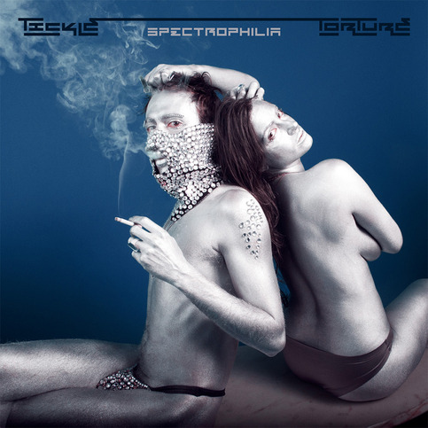
SPECTROPHILIA EP - Tickle Torture [LP+7"/CD/DL]
young-045
Buy LP+7"
Buy CD
Tickle Torture is the sex-pop soundtrack for a new generation of freaks. His first EP, “Spiritual Machete” (2012), felt like catching Justin Timberlake and Prince making out in a dumpster full of broken synthesizers. Equal parts electro-funk and sleaze, “Spectrophilia” has further expanded this sound, incorporating the influences of trashy disco, post-Yeezus experimental hip-hop production sensibilities, and 80’s synth drenched R&B classics to create a one-of-a-kind maximalist assault. Feeding on the sweaty energy left from the funk dynasty of his home base in Minneapolis, one man producer, composer, engineer Elliott Kozel created these tracks over the course of the past year. This do-everything-yourself aesthetic expands into every aspect of the project, from creating his own masks and costumes, to styling and producing many of his own music videos. His sexual, chaotic live shows are half-party, half-performance art, and include a full live band, a team of backup dancers, an arsenal of confetti cannons, strobe lights and video projections.
In the local scene, Tickle Torture has expanded into production work for some of Minneapolis’ finest talents, including Caroline Smith (with whom he co-wrote the nasty ”Fuck Me With The Lights On”) as well as the international rising star Lizzo. Album track “Ready for Love” features local R&B luminary Ashley Dubose, who recently reached a national audience via NBC’s The Voice, melding his experimental electronics and her Neo-Soul leanings into a slinky yet aggressive club banger.
With this 5 song EP, Tickle Torture is poised to deliver his raw, sexual vision of the future of dance music.
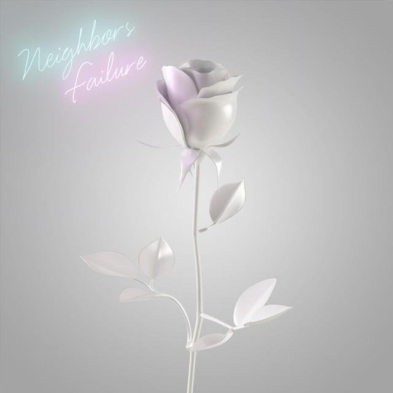
FAILURE - Neighbors [LP]
young-043
Buy Now
Neighbors is the brainchild of Brooklyn-based songwriter Noah Stitelman. Collaborating with Philadelphia producer Kyle "Slick" Johnson (whose work includes albums by Modest Mouse, The Hives, and Rogue Wave), Neighbors released its debut full length, Good Luck, Kid, in the fall of 2012.
Sort of ‘80s UK New Wave, sort of ’90s Synth Pop — sort of neither — Good Luck, Kid tries to overcome the disappointments of everyday life in a storm of manic Manchester rhythms, eerie soundscapes, and deadpan humor.
Neighbors newest album, Failure, picks up this theme — and ties a stick of dynamite to it.
Do good fences make good neighbors? Stitelman doesn’t know. But with Failure, he might just bring a few down with him.

MELTING WIZARD — Croix Cambria Clayton
young-042
Buy Now
Recorded at Red Mountain (紅山) Studios in Kaohsiung, and White House Studios in Minneapolis
Voice, Guitar, Synthesizer - Croix Clayton
Erhu - Betty Su
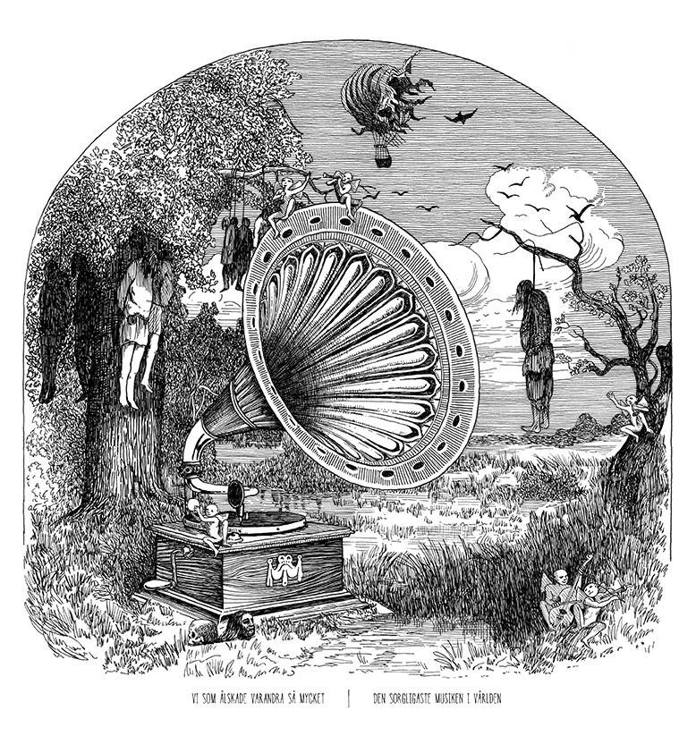
DEN SORGLIGASTE MUSIKEN I VÄRLDEN - Vi Som Älskade Varandra Så Mycket [LP]
young-041
Buy Now
Smashing genres, out of Stockholm, Sweden comes this burning hot piece of wax. Ex- Khayembii Communique, Song of Zarathustra, and Neighbors; this band defies genre and delivers one of the most amazing 8 song debut LPs you'll hear this year. The best of 90s hardcore, played by gentleman who have been honing their craft a lot longer than that, mashed with Godspeed You Black Emperor like creshendos. If there is one record this year you need to own, one record that exemplifies pure, raw emotion at it's purest, this is it.
First press on limited blood red vinyl. Split release with Zegema Beach Records. If you're in Canada, order from Zegema Beach.
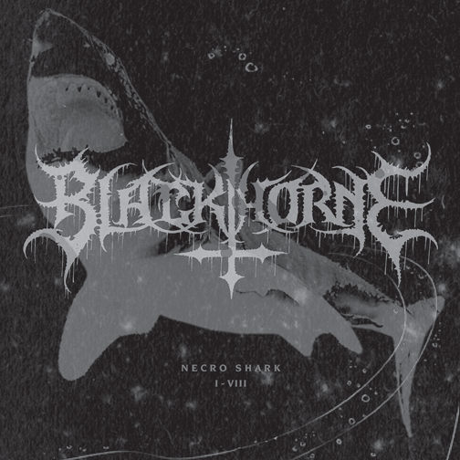
NECROSHARK I-VIII 7" — Blackthorne
young-039
Buy Now
BLACKTHORNE (and Blood of the Young) celebrate it’s first official release on Blood of the Young Records & Press. We bring you a 7" EP entitled “Necro Shark I-VIII”
Showing such influences as “Reign in Blood”-era Slayer and the less serious side of 80’s metal, (like SOD) BLACKTHORNE also bring in the energy and intensity of hardcore from the late 80’s—90’s.
Band members include Bob Eisenbise/Bass (Killsadie, Shotgun Monday, Chibalo), Travis Bos/Vocals (Song of Zarathustra, Book of Dead Names, Chariots, Chibalo, ALANS, HSM), Steve Brooks/Guitar (Chibalo) and Matt Seitzinger/Drums (HSM)
The Blackthorne logo was created by Christophe Szpajdel(Lord of the Logos). Recorded & Mastered by Knol Tate. Art Layout by Jason Miller.

THE RIVER 12" — Marijuana Deathsquads
young-038
Buy Vinyl
Buy on iTunes
45 RPM 12" EP — Includes digital download
Marijuana Death Squads is the ever-evolving, experimental project led by Ryan Olson (producer/writer of Poliça and Gayngs), Isaac Gale and Stefon Alexander (P.O.S.) with multiple drummers (including Ben Ivascu and Drew Christopherson both of Poliça) a slew of electronic instruments and highly affected vocals, their live shows are a violent onslaught of improvised, yet tightly woven, jagged and intricate experimental sound.
Released directly on the heels of their second full length (“Oh My Sexy Lord” via Totally Gross National Product, 10/15/2013) and a remix record of P.O.S. "We Don't Even Live Here" ("POS/WDELH/MDS/RMX" via Rhymesayers 10/23/2013) recorded at April Base Studios under the watchful eye of BJ Burton, "The River" catches Marijuana Deathsquads at their finest. They have taken their time to perfect their art, and it shows.

THE GATE OF XIBALBA, OR, THE WHITE ROAD — Croix Cambria Clayton
young-037
Buy Now
An experimental, non-linear narrative composed using Surrealist Automatic Writing techniques, and modeled on the 22 chapters of the Book Of Revelations of John (and the 22 major arcana of the tarot, on which Revelations itself was modeled), The Gate Of Xibalba is the absurdly visceral tale of millionaire playboy sociopath Christian Saxon- Banks, time-traveling golden boy of the White Road project, a secretive cabal of scientific, political, military and economic bigwigs bent on exploiting the geostrategic advantages of a rapidly emerging psychic high-technology, powered by human sacrifice.
“Mining the psychic and mythological territory explored and devastated by William S. Burroughs, Diego De Landa, and even H.P. Lovecraft and Clark Ashton-Smith, Croix Clayton’s glittering cosmos of word-images is a calculated attempt to invent new directions for the genre called science fiction by removing the constraints of both space and time.”
- V.Vale of Re/Search Publications
Croix Cambria Clayton has been an active member of the Twin Cities creative arts community for over a decade. He has performed or displayed work at the Walker, Soap Factory, and Minneapolis Institute of Arts. As a musician he has played with The American Monsters, Thank You, and Young Quitters. He holds a BA in Film from the University of MN and this is his first novel.
Past Releases (1999–2004)
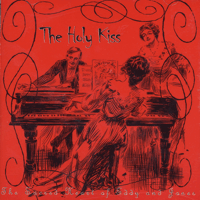
The Holy Kiss — The Sacred Heart of Eddy and Jones [CD]
young-034
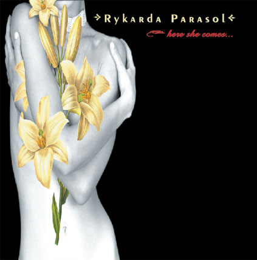
Rykarda Parasol — Here She Comes [CD EP]
young-033
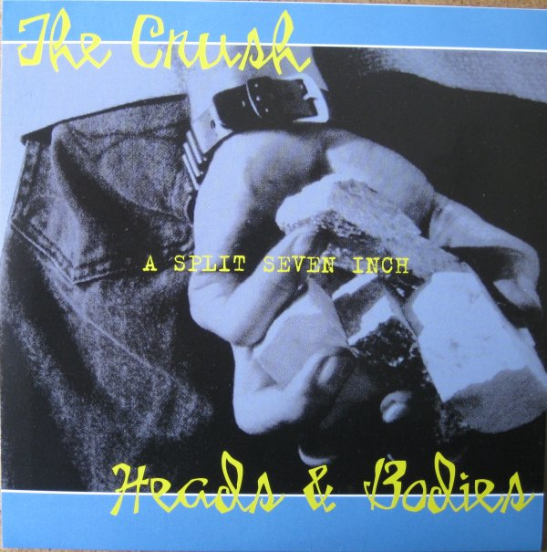
The Crush /Heads & Bodies — Split [7"]
young-031
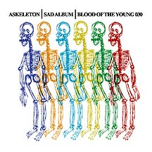
Askeleton — Sad Album [CD]
young-030
Knol tate from the hidden chord doing his own thing with a macintosh... "the ASKELETON sound is nestled in-between early Kraftwerk, sample-filled Africa Bambata, and mid-80s Wire or Talking Heads. Tate also draws influence from the minimal sounds of Can and the dancy layers of "Low" era Eno/Bowie, creating an impact all it's own with simplistic yet powerful songs."
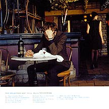
The Crush — Tonight Will Ruin Tomorrow [CD]
young-028
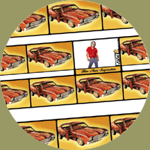
Har Mar Superstar — s/t [12" Picture Disc]
young-027
1100 picture discs. Split Release, CD on Kill Rock Stars.
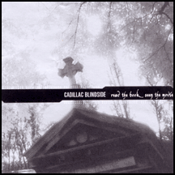
Cadillac Blindside — Read the Book Seen the Movie [LP]
young-026
Split release, CD on Soda Jerk.
The Hidden Chord — Abegail Vongetti [CD EP]
young-025
Split release, Vinyl on Level Plane.
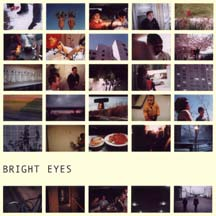
Bright Eyes — MotionSickness b/w Soon You'll Be Leaving Your Man [7"]
young-024
An incredibly beautiful, intensely emotional acoustic masterpiece.
Pressing Information:
8 test pressings
1st press: 1100 black vinyl
2nd press: 1100 mixed color swirl vinyl
3rd press: 2200 clear yellow
4th press: 1100 mixed color
5th press: 1100 mixed color
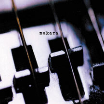
Makara — Discography [LP]
young-023
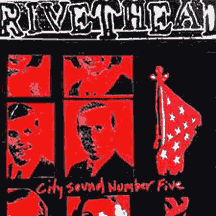
Rivethead — City Sound #5 [7"]
young-021
Pressing Information:
8 test pressings
1st press
550 black vinyl
2nd press
1100 purple swirl
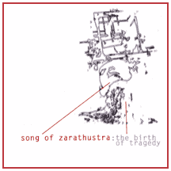
Song of Zarathustra — The Birth of Tragedy [LP]
young-020
Split Release, CD on Troubleman Unlimited.
Blowup — s/t [CD]
young-018
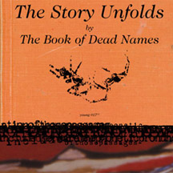
The Book of Dead Names - The Story Unfolds [LP]
young-017

The Plastic Constellations — Let's War [CD]
young-016
The plastic constellation's full-length debut. In the same vein as Les Savy Fav, Dismemberment Plan, and Lifter Puller. These kids can kick out the jams playing some aggressive indie rock with not the slightest scent of pretensiouness. Making indie rock fun while putting together incredible songs.
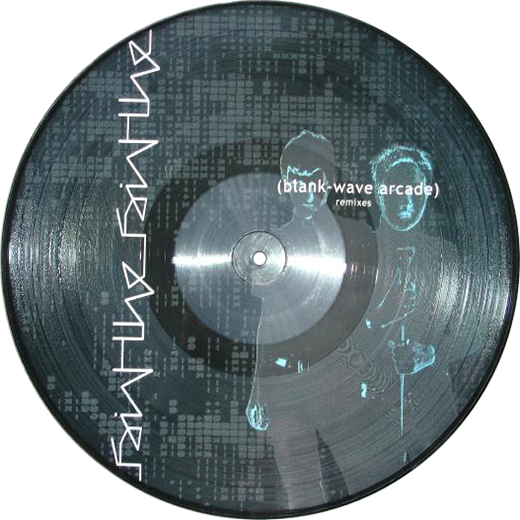
The Faint — (Blank Wave Arcade) Remixes [12" Picture Disc]
young-015
Split release with Saddle Creek.
Pressing Information:
1100 picture discs
8 test pressings
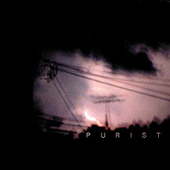
Purist — s/t [One-Sided 12"]
young-014
Project cancelled by the band when they broke up. Limited to 50 one-sided, etched test pressings.
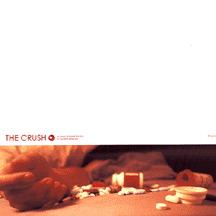
The Crush — Eyes To Break the Ice [7"]
young-012
Pressing Information:
Tour press: 220 black vinyl, tour covers
Regular press: 1100 white vinyl, printed jackets
8 test pressings
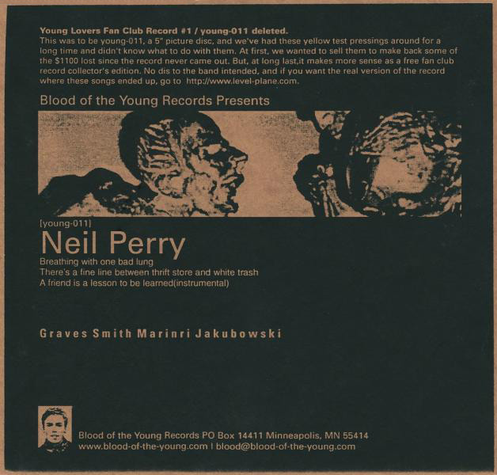
Neil Perry - s/t [5"]
young-011
Initially intended to be a picture disc, this eventually became Young Lover's Fan Club #1, limited to 100 5" yellow test pressings. The box of records was stolen, and it's a mystery how you have one if you have one.
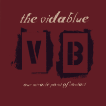
The Vidablue — Our Miracle Point of Contact [LP, CD]
young-010
Incredible debut full-length from these mathy-emo-hardcore kids. Thier best release to date, as it really captured the energy and dynamic they had live.
LP was a split release with Lance Harbor Records.
Pressing Information:
550 black vinyl
1100 CD
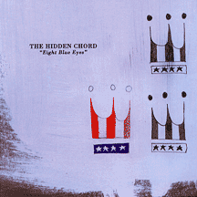
The Hidden Chord — Eight Blue Eyes [CD]
young-009
1100 CDs. Split release with heart of a champion records.
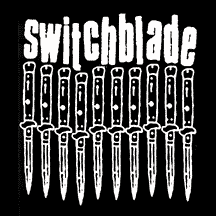
Switchblade — s/t [10"]
young-008
Switchblade were an incredible Gravity-esque band from Stockholm, Sweden. This 10" arrived in its US pressing on top of numerous sold-out split 7"s, a long out of print and much sought after solo 7", and a new LP from the Trust No One imprint, the drummer's label. This record has been pressed twice in Sweden, on the aforementioned Trust No One label; it has sold out an equal number of times.
Pressing Information:
1100 black vinyl
8 test pressings
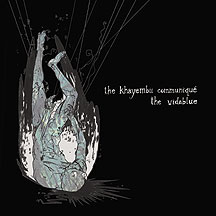
The Khayembii Communiqué vs. The Vidablue — Split [10"]
young-007
The last songs from what was possibly the most underrated "screamo" band of the 2000s, and some amazing songs from the band formerly known as the vidablue.
Pressing Information:
1100 clear blue vinyl
28 test pressings
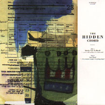
The Hidden Chord — Suicide Note to Myself b/w Last Word [7"]
young-006
Rock and roll... Think the stooges, think the beatles, think shaking your ass and getting these songs stuck in your head for weeks.
Pressing Information:
1100 white vinyl
20 test pressings
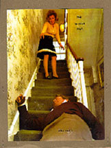
The Lazarus Plot — The End [7"]
young-005
Soft and sweet... Much more so than the double 7". These songs are beautiful.
Pressing Information:
550 red vinyl
20 test pressings
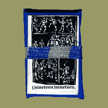
nineteen//nineteen — Demo Tape
young-004.5
300 copies sold on 1999 19/19 tour.
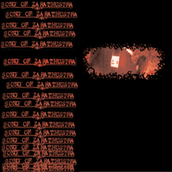
Song of Zarathustra — Discography Vol. 1 [10" Picture Disc, CD]
young-004
Wow. I'm totally excited to have had anything to do with the release of this record. Everything they released in one place, plus two versions of an unreleased studio song.
Pressing Information:
28 good test pressings plus 28 messed up ones
1st press: 550 with red booklet insert/cover
2nd press: 1101 with printed jackets & new insert
3rd press: 2200 with printed jackets
CD 1st press: 1100
CD 2nd press: 2200
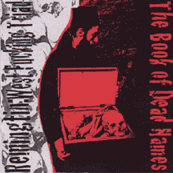
The Book of Dead Names vs. Remingtin: West Fucking Triad — split [7"]
young-003
Pressing Information:
1100 black vinyl
18 test pressings
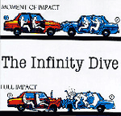
The Infinity Dive — s/t [7"]
young-002
You should know. The last 5 songs they ever recorded. Much better recording quality than the 7" & 10" split, and some amazing songs. This is so damn good. Another record that I'm thrilled to have had the chance to put out. 365 days, 365 records.
Pressing Information:
300 black vinyl
65 final show copies w/ limited covers and silver labels.
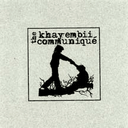
The Khayembii Communiqué — s/t [7"]
young-001
This is one of those records. One of those records you can't stop listening to. The recording is awesome. The songs are awesome. You will love this. I promise. If don martin three, indian summer and shotmaker got crushed in a vice together... But at the same time they've got quite a bit of their own thing going on.
Pressing Information:
First pressing
938 black vinyl
112 blue/white/black marble vinyl
18 test pressings


{kind=link}
{kind=link}
{kind=link}
{kind=link}
{kind=link}
{kind=link}
{kind=link}
{kind=link}
{kind=link}
{kind=link}
{kind=link}
{kind=link}